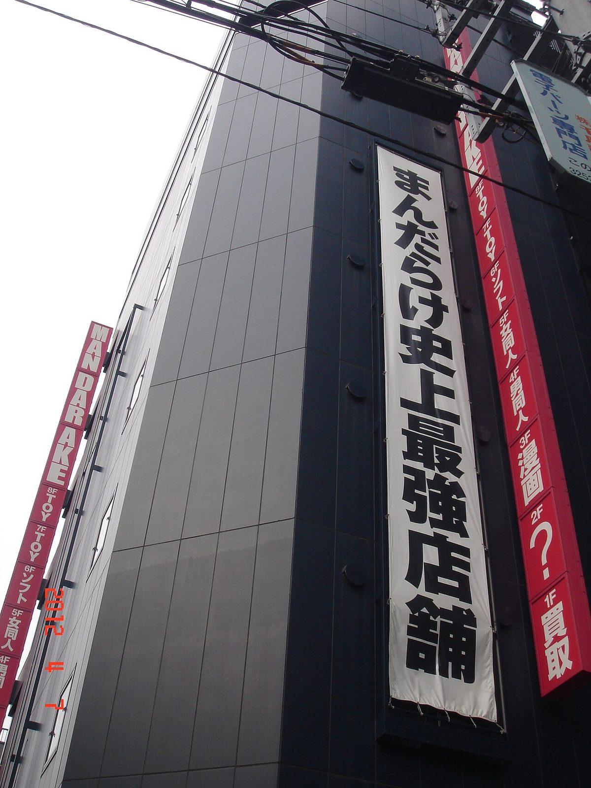
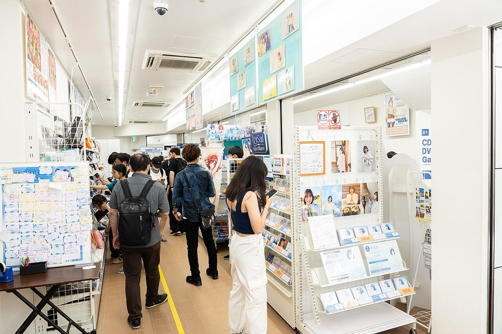
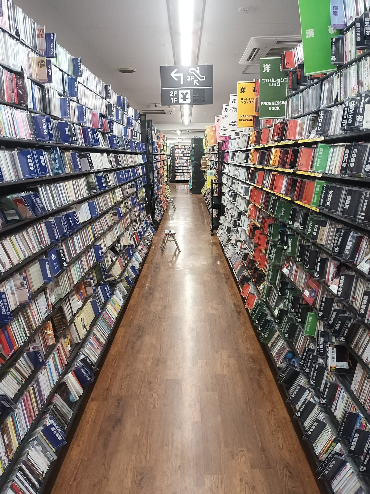
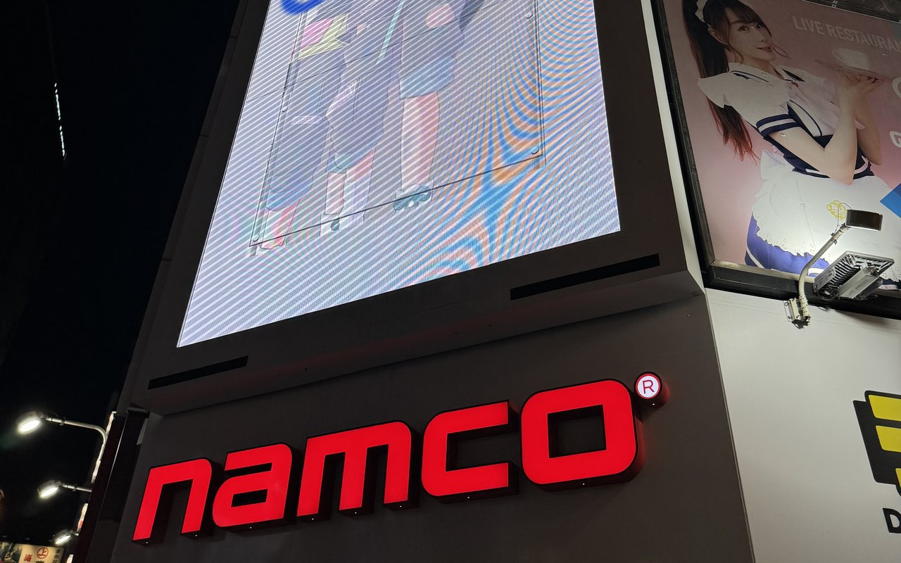
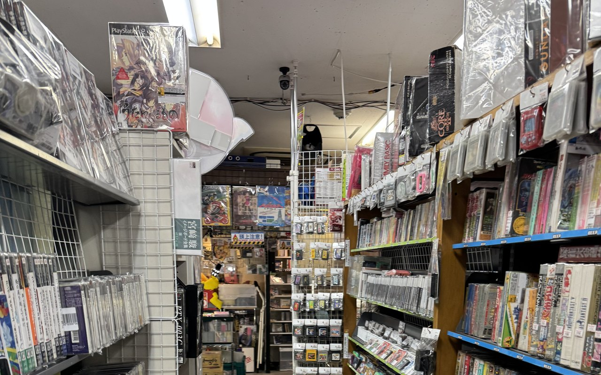

How to find it: come out of JR Akihabara Station at the Electric Town exit — the café is about 1 minute away, on the 1st floor of the BiTO AKIBA building. Please come inside the café and look for me there. There is another Vie de France nearby, so please check the map.
Ten floors of figures, trading cards, dolls and model kits, right outside the Electric Town exit — if it exists in Akihabara, it is probably in here.
02
Second-hand manga & toys
MANDARAKE COMPLEX
12:00–20:00

Eight floors of pre-owned manga, doujinshi, toys, animation cels and cards — the place to hunt for the rare thing that sold out years ago.
03
New releases & goods
ANIMATE AKIHABARA
10:00–21:00

Animate’s flagship, renewed in 2026: new manga, discs, music and character goods, plus event floors for whatever is airing now.
04
Second-hand books, games & cards
BOOKOFF AKIHABARA EKIMAE
10:00–22:00

A big second-hand store one minute from the station: used manga, games, CDs, DVDs and trading cards across several floors — half the fun is never knowing what you will find.
05
Game centre
NAMCO AKIHABARA
10:00–23:00

Bandai Namco’s own game centre, one minute from the Electric Town exit: crane games and gashapon floors, plus the official Ichibankuji shop and a Bandai card game shop.
06
Second-hand games & figures
TRADER AKIHABARA
11:00–20:00

A Chuo-dori institution for used games: floor after floor of pre-owned and retro games, with whole floors of figures too. The stock turns over fast, so every visit is a fresh hunt.
GOOD TO KNOW
The plan is flexible. We choose the shops together on the day, around what you love.
Bring some cash — 100-yen coins especially, for game centres and gashapon machines.
Photos: I take photos during the tour and share an album with you afterwards.
Questions? Message me on WhatsApp: +81 90 4494 1989.
Photo credits and sources
Photos via Wikimedia Commons: Akihabara street (day) by Nickdrj (public domain); Akihabara at night by ElHeineken (CC BY 4.0); Radio Kaikan by John Seb Barber (CC BY 4.0); Mandarake Complex by 正和 (CC BY-SA 3.0); Animate Akihabara by Dick Thomas Johnson (CC BY 2.0); inside BOOK OFF Akihabara Ekimae by Matthide127 (CC0). The figure display case, the Vie de France café at BiTO AKIBA, the namco Akihabara building and inside Trader Akihabara are the guide’s own photos. Opening hours checked against the shops’ official sites on 18 November 2026. Hours can change; we will confirm together on the day.